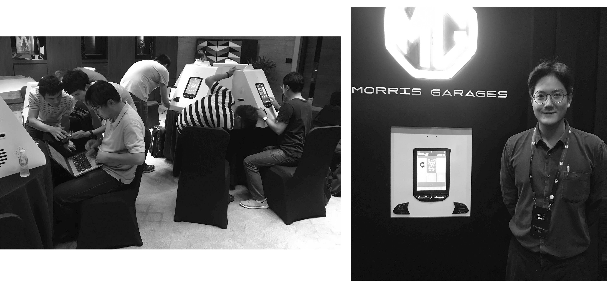

Lead designer - Voice User Interface, User Research, Usability Test
Objectives we achieve with a Vehicle VUI system:
With these objectives, we designed use cases that would usually happen in an automobile.
They are summarized into domains of: Navigation, Phone, Music, Tuner, Vehicle Control and Weather.
More detailed dialogues and solutions to each intent were then carefully designed.
Solutions include not only a general happy path, but also error handling. Here's an example of the dialogue:
When an error happens, we help users to recover from the error and achieve their goal.
Additionally, the prompt design is also a challenge in an automobile scenario. They need to be: 1) Clear, 2) Short, 3) Friendly.
Here are some examples of the prompts:
Simple answer - we go to India and research!

We made interview with around 30 users, and discussed about their habbits and preferences with a voice agent in car.
The findings are quite interesting and it reveals the fact that products do differ from place to place.
It's not just a 'command and answer' interaction with the agent, Indian users are very polite.
'Go to Ahmedabad.'
Although it's an Indian English agent, Indian users could still say Hindi when it comes to locations.
'Play Bollywood music.'
Indian users are very fond of music. And there are quite many unique categories in their music app Ganna.
Accordiing to the findings, we cooperated with engineers and improved the performance of the product.
We do usability test.
Usability test are done in two ways: Observe and interview users; Heuristic evaluation.
Here is an example of how we improved according to usability test:
A usual design of this feature is to ask user, which chanel to tune to. However, according to our research, it's much more likely that users just don't like this channel and wish to switch randomly.
Meanwhile, we watched videos on YouTube, about how users make comments on the system, and how would they actually use it. With these data, we improved the system together with GUI designers and engineers.
I designed and produced all the Earcon for MG Hector Voice System.
For example, in this case, we have the speech_start earcon and the success earcon. Earcons can be a simpler and more efficient way to inform users of the system status.
'Can you please open the window?'